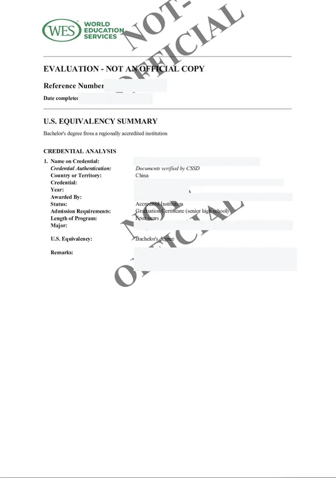
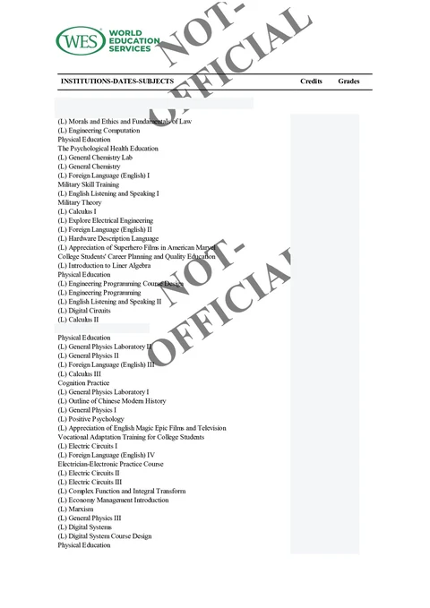
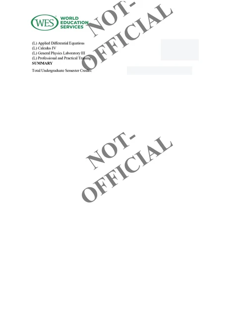
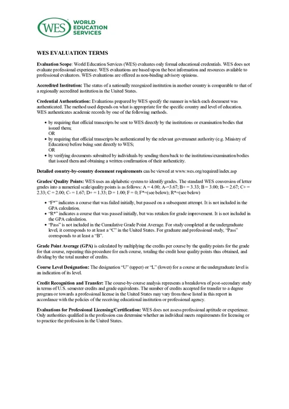

Evaluation Summary
A concise overview of the evaluated credential and its reported equivalency.
Explore sampleWES REPORTS · REAL SAMPLES
Explore real WES credential evaluation report samples, understand different report types, and learn how to read your WES evaluation results when using Chinese academic credentials.
Independent reference resource. Global Attest is not affiliated with WES.
Illustrative document guide · not a WES report
Four page types in this collection. A summary, continuation page and terms sheet are parts of a report, not four separate evaluation products.
A concise overview of the evaluated credential and its reported equivalency.
Explore sampleA detailed page that may include individual courses, credits, grades, and the credential assessment.
Explore sampleA continuation page in this sample set, not a separate WES evaluation service.
Explore sampleDefinitions and explanatory notes in this sample, not a separate WES evaluation product.
Explore sampleThis resource explains what a WES evaluation report sample may look like for China credentials, including U.S. equivalency summary, course-by-course pages and evaluation terms.
A WES evaluation report is a credential evaluation report that compares academic credentials from another country with a destination country's education system. For China credentials, supporting degree, transcript and verification documents may be required before the report can be completed.
Existing Global Attest report images, newly flattened and permanently redacted. This collection illustrates a U.S. evaluation; Canadian formats and other report versions may differ.

Credential and U.S. equivalency overview. Names, reference details and identifying academic history are hidden.
View Full Sample
Individual course rows with credit and grade column headings. Personal grades, credits, institution and academic periods are hidden.
View Full Sample
The continuation of the course listing, followed by a summary. Individual credits, grades and GPA are hidden.
View Full Sample
Definitions and report notes, including evaluation scope, authentication, grades and credit recognition.
View Full SampleSample for reference only. Personal identifiers and individual academic results have been permanently redacted. These images are not official copies for submission or verification. WES is a trademark of its respective owner; Global Attest is not affiliated with WES.
Start with the report purpose and credential details, then read the result and its notes. Fields vary by report. Labels remain visible even where private values have been removed.
Identifies the academic qualification reviewed, such as a degree, diploma or graduation credential.
Shows the educational comparison determined by WES for the destination system; the wording varies by credential and assessment.
Describes how the issuing institution is recognized within the relevant education system.
Lists the field of study or academic specialization associated with the evaluated credential.
Records the normal or completed duration of the academic program considered in the evaluation.
States the year in which the credential was officially conferred or completed.
Summarizes the prior education generally required to enter the evaluated program.
The completion date helps identify the edition being read; it is hidden in this public sample.
An identifier used to associate a report with an application. The actual identifier is permanently hidden here.
Course-by-course pages can include these columns. Personal grades, totals and GPA are hidden in this collection.
Read remarks and the terms page alongside the result; not every report contains the same fields.
Institution status provides context about the issuing school, while program details help identify the qualification evaluated. WES may rely on submitted academic records and approved verification sources when reviewing these details. If you need Chinese degree or transcript verification, visit our China Degree & Transcript Verification Service page.
Major describes the field of study, length of study records the program duration, and year awarded identifies when the credential was conferred. Admission requirements may explain the prior education normally expected for entry. These fields should be read together rather than used individually to predict an equivalency.
A summary is a section of the sample, not proof that it is a separate document-by-document report. WES distinguishes document-by-document and course-by-course evaluations; both can report credential equivalency.
| Feature | Evaluation Summary | Course-by-Course Detail |
|---|---|---|
| Main purpose | Present the overall credential comparison. | Provide a more detailed academic breakdown. |
| Level of detail | Credential and equivalency overview. | Credential information plus course-level analysis. |
| Individual courses | Not itemized in the summary section. | Can be listed individually. |
| Grades and credits | Not shown as a course table. | May include grades, credits and GPA; hidden in these public samples. |
| Recipient requirements | The required evaluation type depends on the receiving institution or program. Confirm the named report before ordering. | |
Official reference: WES evaluation report features. These examples do not prescribe an evaluation type for immigration, admission or licensing.
The credential field identifies what WES reviewed, while the equivalency field records WES's comparison with the destination education system. Similar-looking Chinese qualifications do not automatically receive the same result because institutions, programs, study histories and supporting documents can differ. For a broader overview of academic document certification, read our China Degree Certification Guide.
An equivalency is an educational comparison, not a new degree awarded by WES or a guarantee that a recipient will accept the credential. This collection shows a U.S. comparison; Canadian terminology and recipient requirements may differ.
WES reports for Chinese degrees may use different credential descriptions, equivalency wording and program details based on the institution, qualification, study length and records reviewed. There is no single result that applies to every Chinese degree. The samples on this page demonstrate report structure only and should not be treated as guaranteed outcomes.
For document preparation and submission guidance, read our WES Certification Guide for China Degrees.
A document-by-document report may not satisfy schools or licensing bodies that need course-by-course analysis.
China credentials often require official verification reports or specific delivery routes.
Transcript pages, translation, grading explanations and verification data must match the agency instructions.
WES, ECE, IQAS and other agencies can have different document rules.
Applicants who studied in China and need a credential evaluation for immigration, study, employment or licensing.
People preparing WES or similar reports for universities, employers, immigration agencies or professional bodies.
Applicants who need CHSI or CSSD verification reports, transcripts, translations and account submission guidance.
Schools, employers and consultants comparing WES summary and course-by-course report formats.
WES or similar credential evaluation reports are commonly used for countries and use cases including but not limited to:
The countries above are contexts in which a recipient may request credential evidence from WES or another evaluator, not a promise of a WES product or acceptance in each country. Confirm the named provider and report directly with the recipient.
No. Global Attest is an independent document support provider and is not affiliated with WES.
No. The final evaluation result is decided by WES. Global Attest helps prepare and coordinate China documents to reduce avoidable mistakes.
Many China credential cases involve CHSI or CSSD verification, but exact requirements depend on your education background and WES instructions.
A WES evaluation report may include the credential name, institution, institution status, major or field of study, study length, year awarded, admission requirements and the equivalency determined by WES. A course-by-course report may also show individual subjects, credits, grades and a calculated grade-point average. The exact fields depend on the report type and credentials evaluated. Applicants should read the report together with its notes, terms and delivery information.
No. WES evaluates each credential using the institution, program, level of study, admission requirements, graduation status, documents submitted and applicable assessment policies. Two applicants with degrees from China may receive different equivalencies even when the qualification names appear similar. Differences in institution recognition, program structure, study length or supporting records can affect the report. A sample illustrates report layout and terminology only; it does not establish the result WES will assign to another credential.
No. A sample report can help you understand common sections, field labels and the presentation of an evaluation, but it cannot reliably predict your own result. WES reviews the specific institution, credential, program, dates, study length and supporting documents submitted for each applicant. Assessment policies and document requirements may also change. Use samples as reading aids only, and wait for the official WES evaluation before relying on an equivalency for immigration, admission, employment or licensing decisions.
WES may review both a degree or graduation credential and the related academic transcript, depending on the country of education, credential and evaluation type. The degree document confirms the qualification awarded, while the transcript provides courses, grades, credits and study history. Some China cases may also require approved verification reports or direct document delivery. Applicants should follow the checklist in their own WES account because requirements can differ and a sample report does not replace current instructions.
Start by reviewing the document requirements shown for each credential in your WES account. Confirm whether WES requests the degree certificate, graduation certificate, complete transcript, certified translation, CHSI/CSSD verification or direct delivery from an institution or approved source. Check that names, dates and credential details are consistent across every record. Do not rely only on a sample report. Follow the specified submission method and monitor the account for status updates or requests for additional documents.
The samples are for reference only. Applicants must order their own report through WES and follow the current WES document instructions.
Yes. WES reports may be used for U.S. study, employment, professional licensing, graduate admission and other credential recognition purposes when accepted by the receiving organization.
It is an assessment of academic credentials in relation to another education system. It describes the credential and reports the equivalency determined by WES; it does not award a new degree.
A document-by-document report describes credentials and their equivalencies. A course-by-course evaluation adds course-level information such as credits and grades. A summary or continuation page in a sample is not a separate evaluation product.
Ask the receiving institution, employer, licensing body or program to specify its required evaluator and report type. Then check the relevant WES instructions before ordering.
Use depends on the program or recipient. Immigration may require a designated Educational Credential Assessment rather than a general report. Employment acceptance and required report detail are determined by the employer or relevant authority.
For the latest evaluation options, use WES’s official report overview. For selection guidance, see WES’s explanation of standard report types.
OPTIONAL APPLICATION SUPPORT
Tell us about your academic background, evaluation purpose, and receiving institution's requirements. Global Attest can help you review the documents and preparation steps for your WES application.
Need help preparing Chinese documents for WES? Tell us your university, credential type, graduation year, destination country and current WES requirements, if available. A brief description is enough for an initial review. Global Attest can help coordinate the China-side document preparation.
WES Support ServiceCHSI Verification Resources